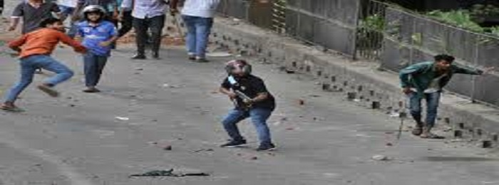

to place stickey top you need a parent div of nav.navbar with the classname sticky-top
This article is about the movement primarily focused on quota reform. For the following disinvestment movement that ultimately overthrew Sheikh Hasina
The 2024 Bangladesh quota reform movement was a series of anti-government and pro-democracy protests in Bangladesh, spearheaded primarily by university students. Initially focused on restructuring quota-based systems for government job recruitment, the movement expanded against what many perceived as an authoritarian government when they carried out the July massacre of protestors and civilians, most of whom were students.Started as a student movement, the movement later escalated into a fully-fledged mass uprising known as the Student–People's uprising.
The protest began in June 2024, in response to the Supreme Court of Bangladesh reinstating a 30% quota for descendants of freedom fighters, reversing the government decision made in response to the 2018 Bangladesh quota reform movement. Students began to feel like they have a limited opportunity based on merit. The protest quickly spread throughout the entire country because of the government's violent response, as well as growing public dissatisfaction against an oppressive government. The situation was further complicated by many other ongoing issues, like the government's inability to manage a prolonged economic downturn, reports of rampant corruption and human rights violations, and the absence of democratic channels for initiating changes.
The government sought to suppress the protests by shutting down all educational institutions. They deployed their student wing, the Chhatra League, along with other factions of the Awami League party. These groups resorted to using firearms and sharp weapons against the demonstrators.The government then deployed Police, RAB, BGB and other armed forces, declaring a nationwide shoot-at-sight curfew amid an unprecedented government-ordered nationwide internet and mobile connectivity blackout that effectively isolated Bangladesh from the rest of the world. Later, the government also blocked social media in Bangladesh. Government forces cordoned of parts of the capital city of Dhaka and conducted Block Raids, randomly picking up anyone they suspected having links to the protest, causing fear among the city residents.As of August 2, there were 215 confirmed deaths, more than 20,000 injuries, and more than 11,000 arrests.The unofficial death toll was between 300 and 500. UNICEF reported that at least 32 children were killed during July's protests, with many more injured and detained.Determining the exact number of deaths has been difficult because the government reportedly restricted hospitals from sharing information with the media without police permission, hospital CCTV footage was confiscated, and numerous individuals with gunshot wounds were buried without identification.
After the High Court ruled in favor of quotas on 5 June 2024, the students of various universities in Dhaka united to demand quota reform. After the movement was initially started, it was postponed due to Eid al-Adha and the summer holidays. After the holidays, the agitation started again peacefully but gradually became widespread. Initially, the students and teachers of many public universities and other educational institutions joined the movement.Later, the students of private universities also followed suit by joining the public demonstration.Under the banner of Anti-discrimination Students Movement (Bengali: বৈষম্যবিরোধী ছাত্র আন্দোলন), students started the Bangla Blockade. During the movement, the Appellate Division issued a status quo for four weeks on 10 July, canceling the freedom fighters' quota. Reacting to the court verdict, the students said they are seeking a final solution to the quota issue from the government, claiming the movement has nothing to do with the court. The protest also affected the domestic train and road transportation networks across Bangladesh.
Peaceful demonstrations by the students restarted on 1 July, while public university teachers declared a strike protesting the new Universal Pension Scheme,causing universities to close. Demonstrations spread nationwide as the movement became headed by a newly formed Anti-discrimination Students Movement, an umbrella organisation for the student protesters. On July 7, protestors launched the nationwide Bangla Blockade, obstructing traffic and rail in major cities and metropolises including Dhaka, Chittagong, Comilla, Jessore, Rangpur, Rajshahi, and Bogura.While the Appellate Division ordered a four-week status quo regarding the quota on 10 July, protesters continued to demand a solution from the government.Protests turned violent for the first time the next day as the police clashed with the students. On 14 July, Prime Minister Sheikh Hasina made controversial remarks about the anti-quota protests, escalating the situation and raising the public's anger. On 15 July, the ruling Awami League solidified its stance against the demonstrations, and the protestors met first violent suppression from the Chhatra League leaving several hundred injured.In response to the Chhatra League attacks, student protesters at Rajshahi University vandalized halls, targeting the room of the President of RU Chhatra League and other members associated with the group.The protesters in Dhaka University removed Chhatra League members from 11 different halls and declared a ban on the pro-quota student organization. At other universities across the country, students expelled Chhatra League members from their campuses, with some members in Chittagong even being thrown from high rooftops by angry protesters during clashes.These actions led to many campuses independently declaring themselves "Chhatra League Free".
The Anti-discrimination Students Movement put forward the following demands to the government:
In response to the violent protests involving members of the Chhatra League and police forces, the Anti-discrimination Students' Movement issued a revised nine-point demand. The demands include:
On 5 June, the High Court re-established the job quota that reserves 30% of the civil service posts for the children and grandchildren of freedom fighters in the Bangladesh Liberation War.
Six universities performed peaceful protests against the quota ruling.
On 7 July, students staged a blockade and demanded the rescinding of the quota.
At approximately 11:00 a.m. in the University of Dhaka, a protest march commenced in front of the library, passed by the Raju Memorial Sculpture, and culminated in the blockage of the Shahbagh intersection.Members of the law and order forces positioned barricades in front of the students. In the afternoon, it is known that the status quo has been given for four weeks in the ruling given by the High Court canceling the quota system. The Chief Justice asked the students to go back. Dhaka's transport system came to a standstill due to the blockade in various parts of Dhaka. Long-distance buses and trains were stopped due to the agitation.
By mid-July, the protests turned violent after Bangladesh Chhatra League, the student wing of the ruling party, along with the police attacked student protesters in the capital Dhaka.
The government soon shut down universities and cut off the internet. At least 187 people were killed and 1,000 arrested in the violence and the government crackdown between July 10 and 20.
According to NetBlocks, a watchdog organisation that monitors cybersecurity and internet governance, the internet in Bangladesh was cut off by the authorities in an attempt to quash the nationwide protests.